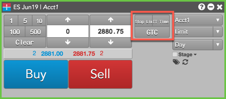
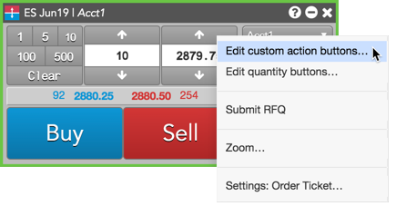
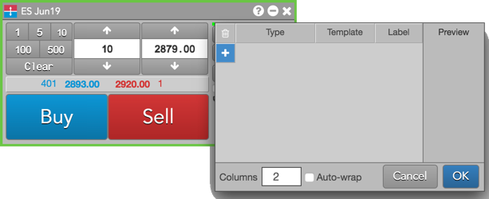
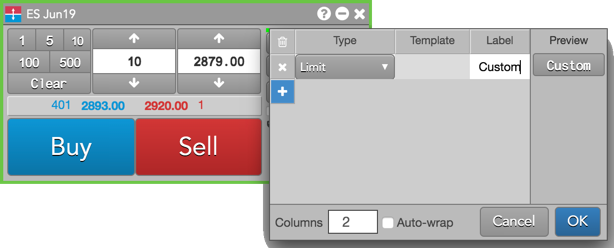
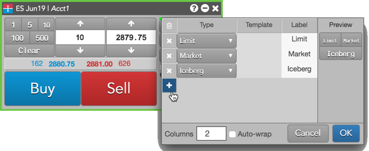
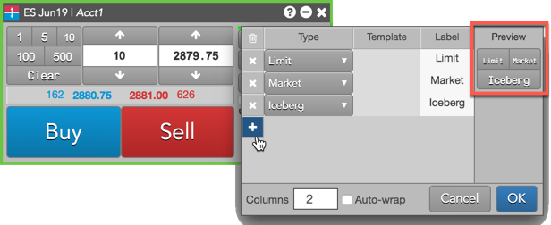
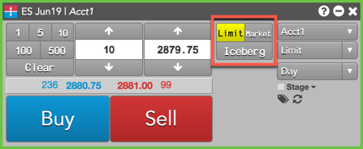

If you frequently use one or more order types, you can add custom action buttons to the Order Ticket for each order type instead of selecting it from the order type selector. Custom action buttons can be added for:
For example, if you frequently submit Stop Limit orders and TT Time Sliced orders and use a Good-Til-Cancel TIF, you can add custom action buttons as shown below.

When you click a custom order type button, it automatically sets the order type or TIF. The button remains active until you unselect it, so you can quickly place multiple orders without having to select an order type or TIF for each time.
To add custom action buttons to the Order Ticket:

The custom action buttons dialog box appears.

Tip: When adding a manual fill button to the Order Ticket for a care order, scroll to the bottom of the order types list to select "Manual Fill".
When the button is clicked, the order will automatically use the values defined in the template, and will not display the fly-out.



The custom buttons appear in the Order Ticket.
